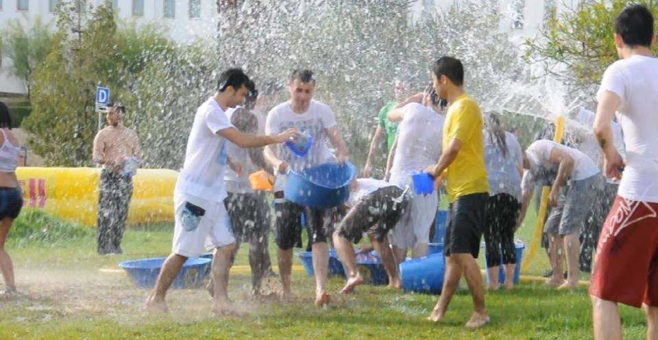
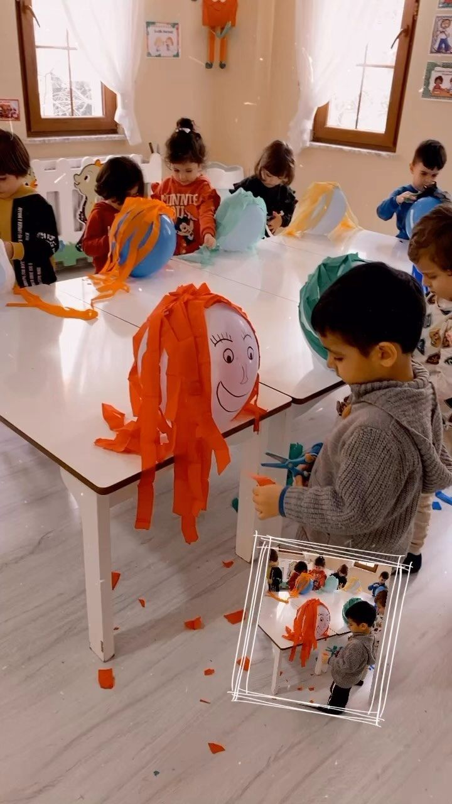
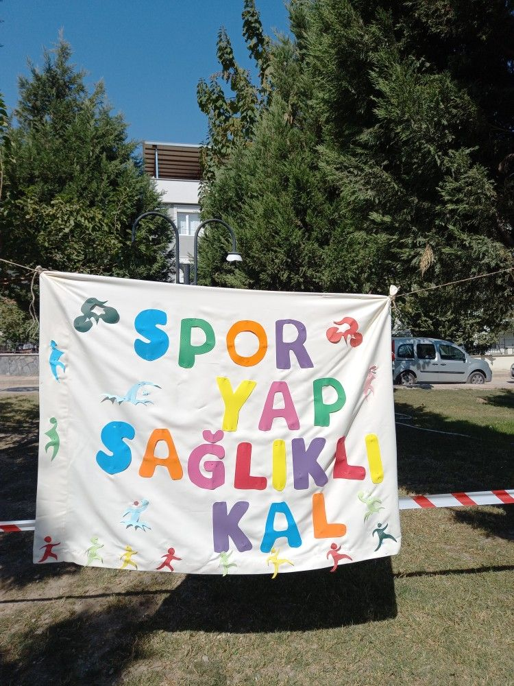

Köy Haberleri
Köyümüzde gerçekleşen etkinlikler, duyurular ve güncel gelişmeler
Etkinlikler
Köyümüzde gerçekleştirilen kültürel etkinlikler, festivaller ve toplum buluşmaları hakkında detaylı bilgiler burada yer almaktadır. Bu etkinlikler köy halkımızın bir araya gelmesi ve sosyal bağların güçlenmesi için önemli fırsatlardır.



Duyurular
Köy yönetimi tarafından yapılan resmi duyurular, önemli bilgilendirmeler ve köy halkımızı ilgilendiren güncel konular hakkında detaylı bilgiler.
-
15 Ekim 2025Yeni kütüphane açılışı yapılacak. Tüm köy halkımız davetlidir. Açılış töreni saat 14:00'da başlayacaktır.
-
22 Ekim 2025Çocuklar için resim yarışması düzenlenecek. 6-14 yaş arası çocuklarımızın katılımı beklenmektedir. Ödüllü yarışma!
-
30 Ekim 2025Köy pazarı günleri başlayacak. Her Çarşamba köy meydanında yerel ürünler satışa sunulacaktır. Üreticilerimiz kayıt yaptırabilir.
-
5 Kasım 2025Köy parkında ağaçlandırma çalışması yapılacak. Gönüllü katılımcılar köy muhtarlığına başvurabilir. Birlikte daha yeşil bir köy!